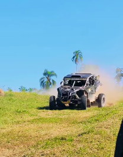

O rally Baja pelo formato FIA é um rally com veículos Off-Road que repete trechos com quilometragem média em relação a rallys mais longos de raid, como o Dakar Rally e o Rally dos Sertões.

Top 3 UTV Ultimate
1.3-Pedro Biamor-Can-am Maverick R-78 PTS
2.29-Denisio do Nascimento-Can-am Maverick R-67 PTS
3.5-Davidsson Mantovani-Can-am Maverick R-67 PTS
Top 3 UTV1
1.22-André Hort-Can-am Maverick R-78 PTS
2.20-Ricardo Sarti-Can-am Maverick R-67 PTS
3.28-Lino Kohler-Can-am Maverick R-63 PTS
Top 3 UTV2
1.15-Murilo Colatrelli-Can-am Maverick R-78 PTS
2.10-Vanderlei Rabi-Can-am Maverick X3-1 PT
Top 3 UTV3
1.31-João Ayla-Can-am Maverick X3-78 PTS
2.36-Pedro Azevedo-Can-am Maverick X3-67 PTS
3.27-Heitor Vargas-Can-am Maverick X3-65 PTS
UTV Double
1.14-Javier Casanova / Tulio Taniguchi-Can-am Maverick R-71 PTS
2.25-Rubens Salin / Adeillton Dos Santos-Can-am Maverick R-68 PTS
3.32-Acaio luiz / Rafael Espindola-Can-am Maverick R-61 PTS
4.34-Peter Gottshalk / Lourival Roldam-Can-am Maverick-55 PTS
5.7-Rodrigo Noll / Fred Zettel-Can-am Maverick X3-47 PTS
UTV Double Master
1.35-José Bergel / Douglas Sozua-Can-am Maverick X3-78 PTS
UTV Feminino
1.21-Helena Dayama-Can-am Maverick R-78 PTS
UTV Start
1.19-Tiago Paegle / Gunnar Dums-Can-am Maverick X3-78 PTS
Top 3 SS1
1.3-Pedro Biamor-Can-am Maverick R-22:06.24
2.14-Javier Casanova / Tulio Taniguchi-Can-am Maverick R-22:37.14
3.5-Davidsson Mantovani-Can-am Maverick R-22:41.06-
Top 3 SS2
1.3-Pedro Biamor-Can-am Maverick R-22:11.97
2.14-Javier Casanova / Tulio Taniguchi-Can-am Maverick R-22:23.89
3-29-Denisio Do Nascimento-Can-am Maverick R-22:41.06-
Top 3 SS3
1.3-Pedro Biamor-Can-am Maverick R-22:04.04
2-29-Denisio Do Nascimento-Can-am Maverick R-22:21.59
3.5-Davidson Mantovani-Can-am Maverick R-22:24.25